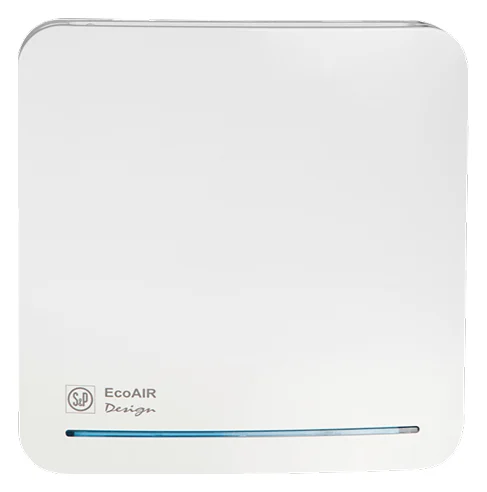
Sessiz Fanlar
Duvar ve Tavan Tipi Radyal Fanlar ECOAIR DESIGN
Banyo ve çamaşır odalarında sürekli egzoz ihtiyacına yönelik, sabit debi ayarlı radyal fan.
ÜRÜN KATALOĞU
Ürün ailesini seçin veya model adıyla arayın. Teknik detayları inceleyin, ürün için doğrudan teklif isteyin.
81 ürün / model

Sessiz Fanlar
Banyo ve çamaşır odalarında sürekli egzoz ihtiyacına yönelik, sabit debi ayarlı radyal fan.
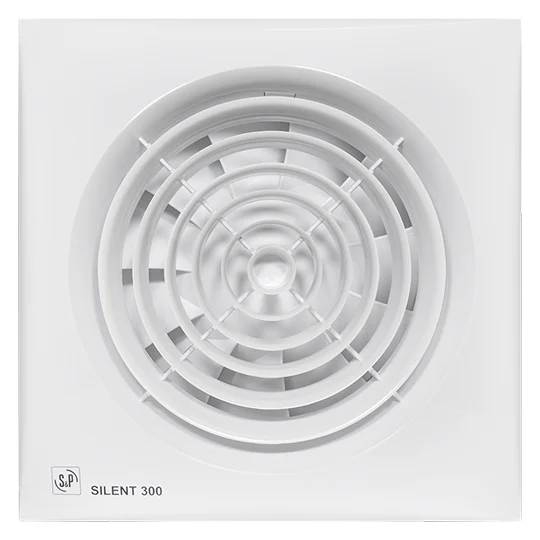
Sessiz Fanlar
Duvar ve tavanda kullanılabilen, düşük ses ihtiyacına yönelik aksiyel fan ailesi.
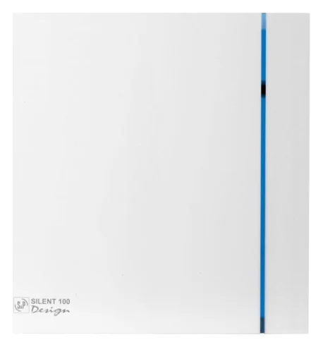
Sessiz Fanlar
Banyo ve benzeri küçük alanlarda duvar ya da tavana uygulanabilen dekoratif aksiyel fan.
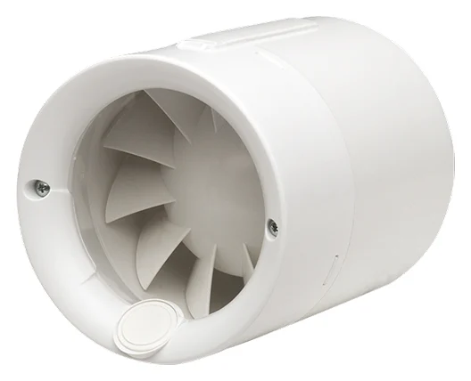
Sessiz Fanlar
Küçük hacimler ve komşu odalar arasındaki hava transferi için kompakt aksiyel fan.
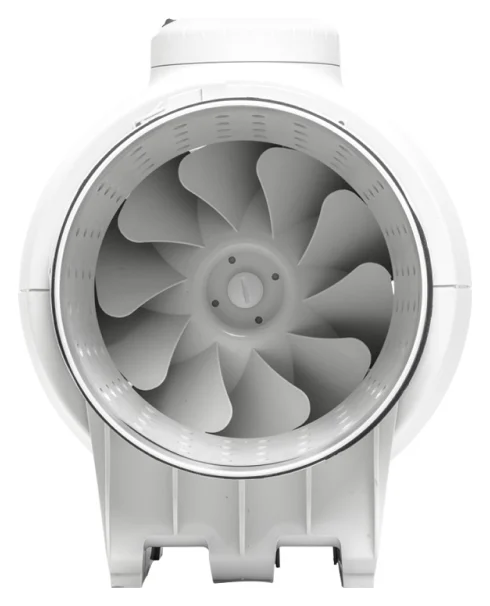
Sessiz Fanlar
Kanal içinde sessiz hava transferi için ses yutucu gövdeli, karma akışlı fan serisi.
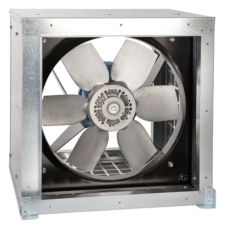
Otopark Fanları
Kabin gövde içinde ayarlanabilir kanatları bulunan, geniş debi aralıklı aksiyel fan.
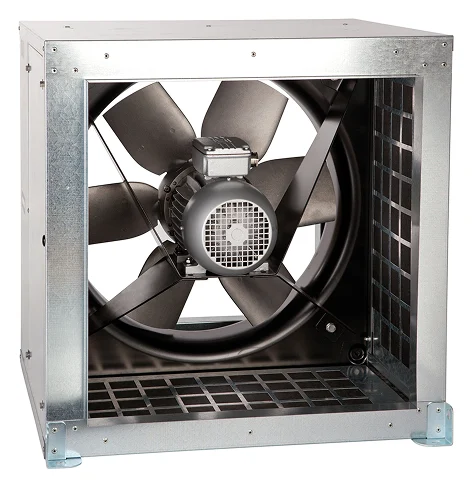
Otopark Fanları
Duman egzozu için yalıtımlı kabin içinde çalışan, kanat açısı ayarlanabilen aksiyel fan.
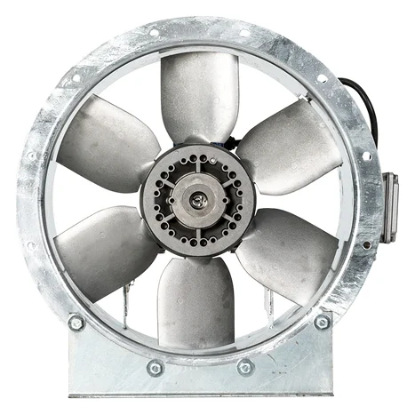
Otopark Fanları
Yüksek hava debisi gereken tesisler için farklı gövde ve kanat ayarlarıyla seçilebilen aksiyel fan.
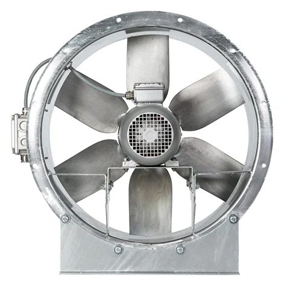
Otopark Fanları
Duman tahliyesi uygulamalarında değerlendirilen, silindirik gövdeli aksiyel fan serisi.
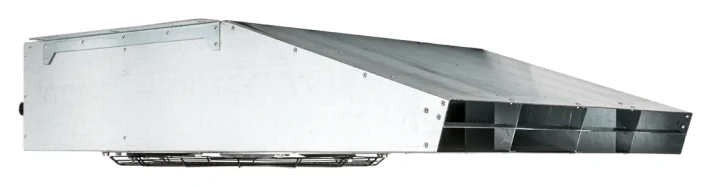
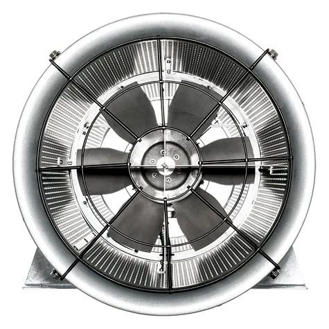
Otopark Fanları
Otoparklarda hava hareketini yönlendiren, iki tarafı susturuculu aksiyel jet fan ailesi.
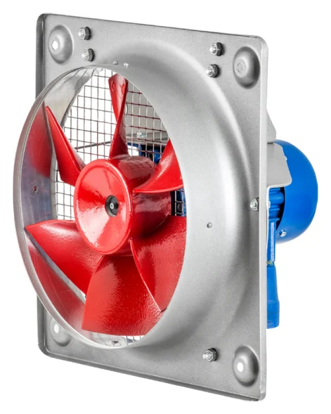
ATEX Fanlar
Duvar tipi uygulamalarda kullanılabilen, ATEX ürün ailesindeki aksiyel fan.
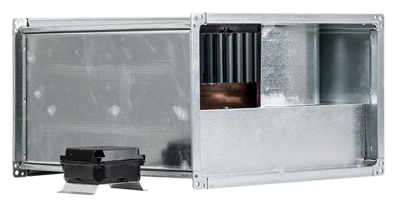
ATEX Fanlar
Dikdörtgen kanallardaki egzoz ihtiyacı için ex-proof radyal fan serisi.
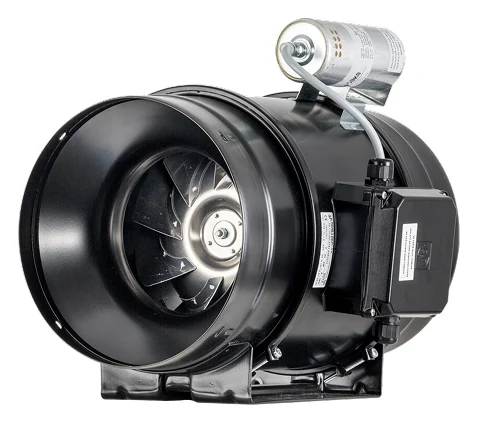
ATEX Fanlar
Patlayıcı ortam uygulamaları için değerlendirilen, yuvarlak kanal tipi karma akışlı fan.
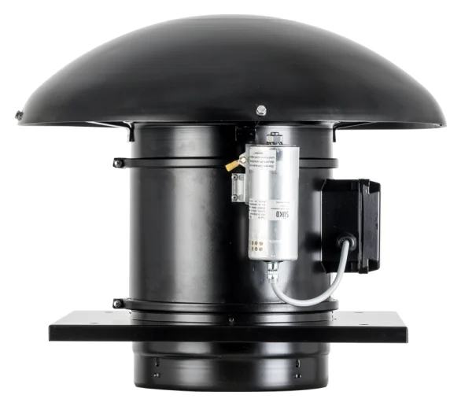

Isı Geri Kazanım Cihazları
Duvar veya asma tavan montajına göre seçilebilen, kompakt konut tipi ısı geri kazanım cihazı.

Isı Geri Kazanım Cihazları
Konutlarda egzoz ve taze havayı birlikte yöneten, karşı akışlı eşanjöre sahip ısı geri kazanım cihazı.

Isı Geri Kazanım Cihazları
Islak alanlardan egzoz yaparken yaşam alanlarına filtrelenmiş taze hava sağlayan konut tipi cihaz.

Isı Geri Kazanım Cihazları
Tek bir odanın taze hava ihtiyacı için seramik eşanjörlü, merkezi olmayan havalandırma ünitesi.
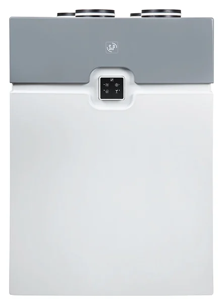
Isı Geri Kazanım Cihazları
Konut havalandırmasında ısı geri kazanımı ve nem kontrolünü bir araya getiren modüler cihaz.
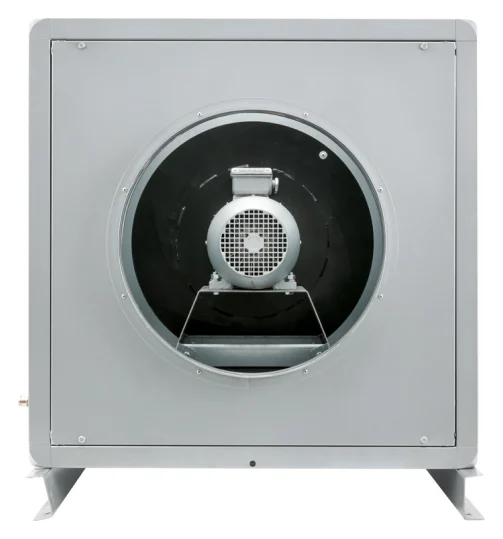
Salyangoz ve Hücreli Fanlar
Akustik yalıtımlı kabin içinde çalışan CHAT serisi, direkt akuple radyal fanlar.
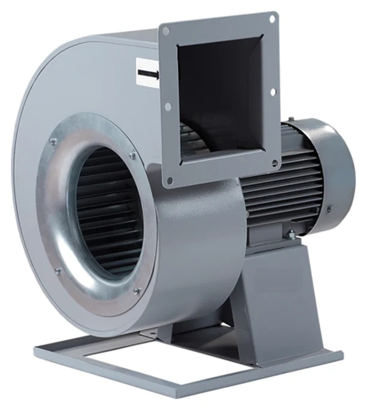
Salyangoz ve Hücreli Fanlar
Toz toplama ve hava transferi hatlarında basınç ihtiyacına göre seçilen santrifüj fanlar.

Esnek Hava Kanalları
Dar ve dönüşlü bağlantılarda kullanılabilen, yalıtımsız esnek alüminyum hava kanalı.

Esnek Hava Kanalları
Havalandırma cihazları ile dağıtım elemanları arasındaki bağlantılara yönelik esnek kanal serisi.

Esnek Hava Kanalları
Isı ve ses yalıtımı istenen kanal bağlantıları için esnek alüminyum hava kanalı.

Chiller ve Klima Santralleri
Havayı filtreleme, ısıtma ve soğutma işlemlerinden geçirerek iç mekâna ileten klima santrali.

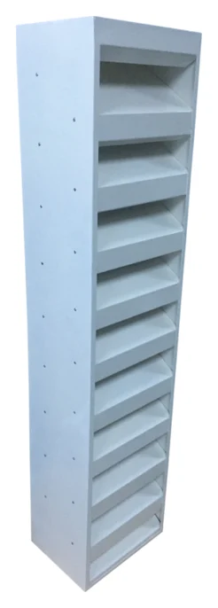
Menfezler ve Hava Dağıtımı
Hava giriş ve çıkış açıklıklarında ses geçişini azaltmak için kullanılan akustik panjur.
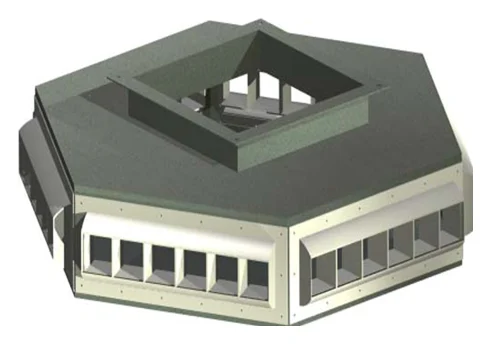
Menfezler ve Hava Dağıtımı
Depo, hangar ve üretim alanlarında çok yönlü üfleme veya emiş için kutulu panjur.
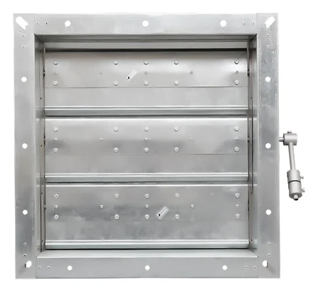
Menfezler ve Hava Dağıtımı
Kanal basıncı belirlenen seviyenin üzerine çıktığında hava tahliyesi sağlayan damper.
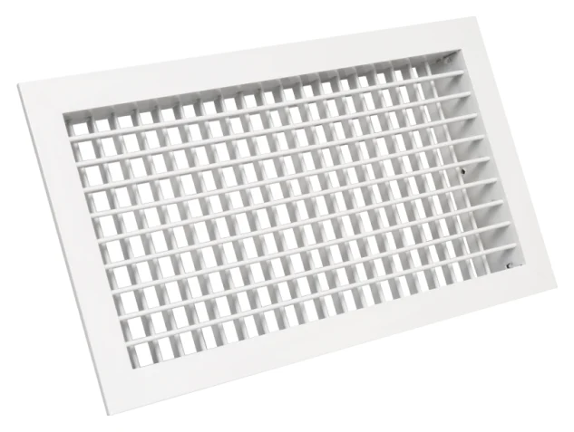
Menfezler ve Hava Dağıtımı
İki sıra ayarlanabilir kanatla havayı yatay ve dikey yönde yönlendiren menfez.
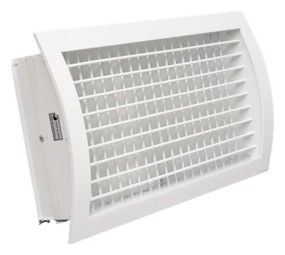
Menfezler ve Hava Dağıtımı
Yuvarlak kanal yüzeyine uygun biçimlendirilmiş üfleme veya emiş menfezi.
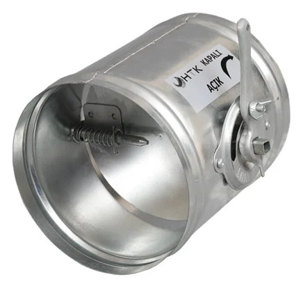
Menfezler ve Hava Dağıtımı
Yuvarlak kanallarda hava miktarını ayarlamak için kullanılan dairesel damper.
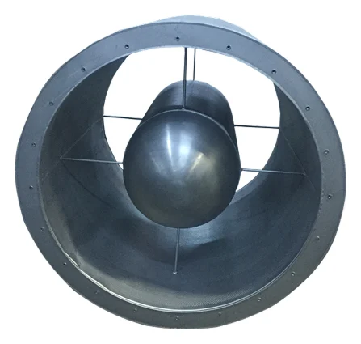
Menfezler ve Hava Dağıtımı
Yuvarlak hava kanallarında cihazdan gelen sesin taşınmasını azaltmaya yönelik susturucu.
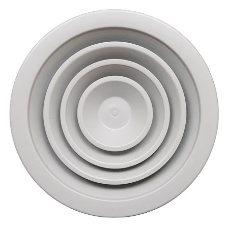
Menfezler ve Hava Dağıtımı
Tavana monte edilen, yatay hava dağılımına uygun dairesel anemostat.
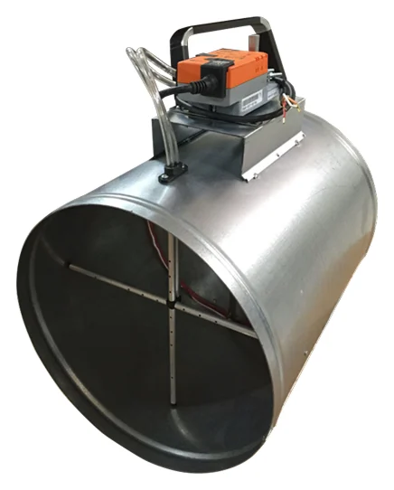
Menfezler ve Hava Dağıtımı
Değişen hava ihtiyacına göre üfleme ve emiş hatlarında debiyi kontrol eden damper.
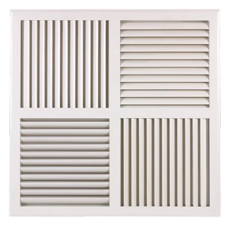
Menfezler ve Hava Dağıtımı
Havayı dört yönde dağıtan, farklı kanat kontrol seçeneklerine sahip swirl difüzör.
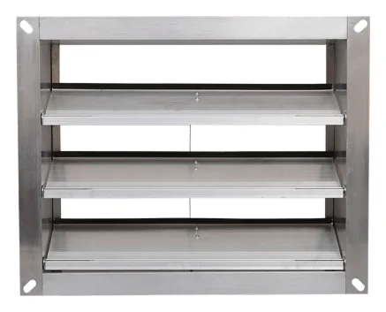
Menfezler ve Hava Dağıtımı
Fan durduğunda ters hava geçişini sınırlayan, akışla açılan dörtgen damper.
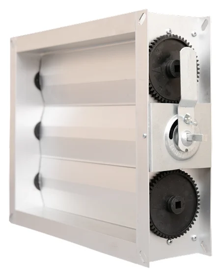
Menfezler ve Hava Dağıtımı
Dikdörtgen kanal hatlarında debi ayarı yapan, zıt yönlü kanatlı damper ailesi.
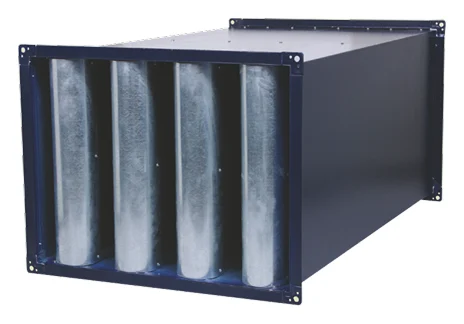
Menfezler ve Hava Dağıtımı
Dikdörtgen kanal hatlarında fan ve hava akışı kaynaklı sesi azaltan susturucu.
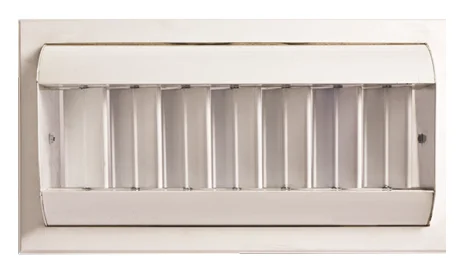
Menfezler ve Hava Dağıtımı
Yüksek tavanlı alanlarda havayı uzun mesafeye yönlendiren silindirik difüzör.
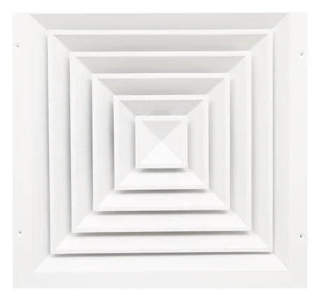
Menfezler ve Hava Dağıtımı
Tavan yüzeyinden üfleme ve emiş için sökülebilir iç kanatlı kare anemostat.
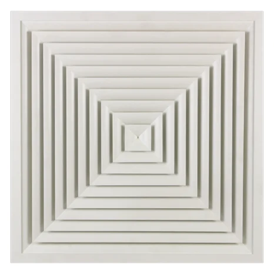
Menfezler ve Hava Dağıtımı
Şartlandırılmış havanın tavan seviyesinde dağıtılması için eğrisel kanatlı kare anemostat.
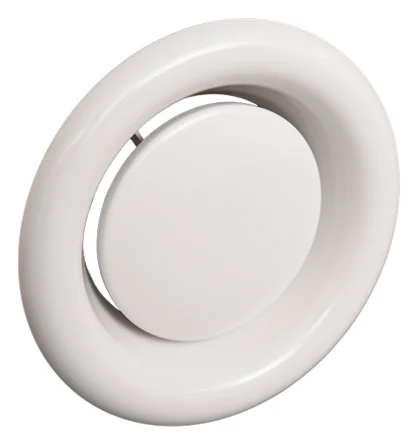
Menfezler ve Hava Dağıtımı
Banyo, duş ve benzeri hacimlerde göbeği çevrilerek debisi ayarlanabilen anemostat.
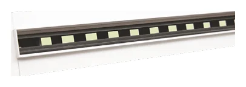
Menfezler ve Hava Dağıtımı
Çerçevesi tavan içinde kalan, ince çizgisel açıklıktan hava dağıtan veya toplayan slot difüzör.
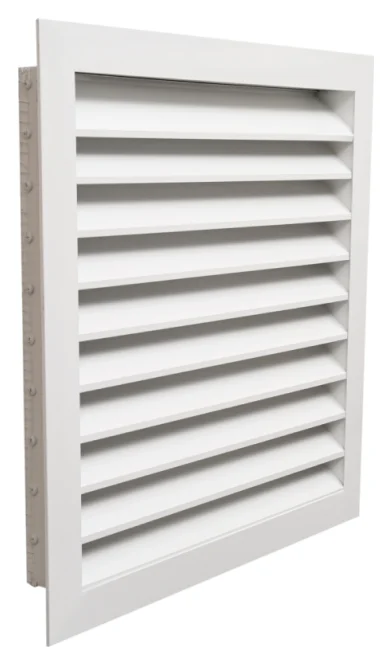
Menfezler ve Hava Dağıtımı
Taze hava ve egzoz açıklıklarında dış etkenlere karşı koruma sağlayan panjur ailesi.
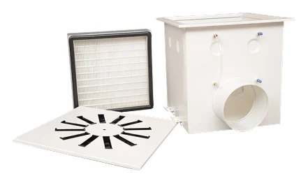
Menfezler ve Hava Dağıtımı
HEPA filtrenin kanal sistemine bağlantısı ve ölçüm erişimi için kaynaklı filtre kutusu.
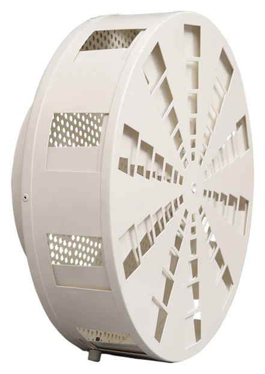
Menfezler ve Hava Dağıtımı
Yüksek hacimlerde ısıtma ve soğutma ihtiyacına göre hava yönünü değiştiren difüzör.
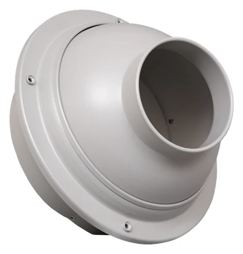
Menfezler ve Hava Dağıtımı
Geniş iç hacimlerde hava akışını uzak noktalara taşımak için yönlendirilebilir jet nozul.
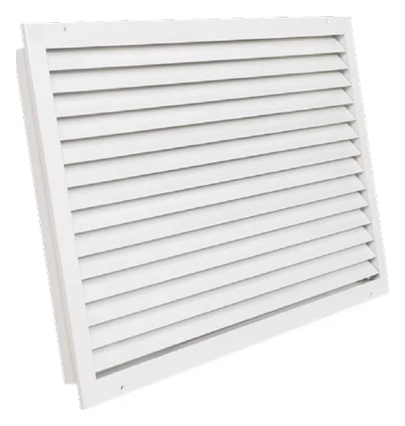
Menfezler ve Hava Dağıtımı
Kapı kapalıyken komşu hacimler arasında hava geçişi sağlayan, görüşü sınırlayan transfer menfezi.
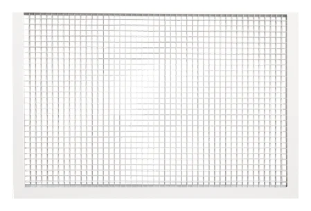
Menfezler ve Hava Dağıtımı
Geniş emiş yüzeyiyle dönüş havası ve iç ünite resirkülasyonu için kullanılan petek menfez.
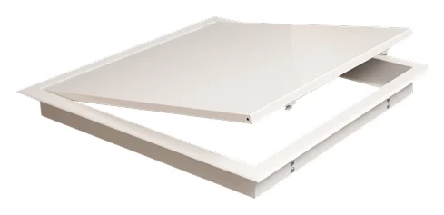
Menfezler ve Hava Dağıtımı
Kanal ve klima santrali bileşenlerine kontrol ve bakım için erişim sağlayan kapak.
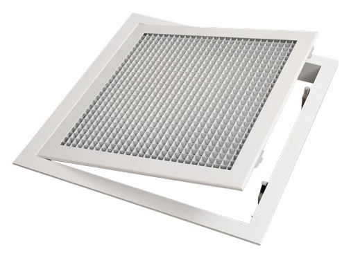
Menfezler ve Hava Dağıtımı
Petek yüzeyli havalandırma uygulamalarında kontrol ve bakım erişimi sağlayan kapak.
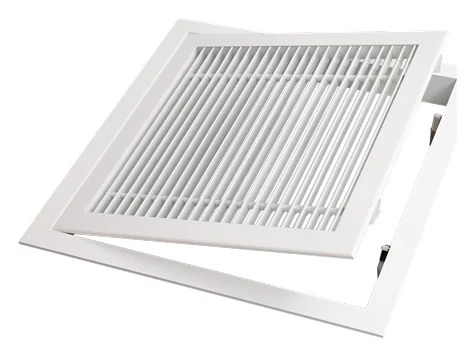
Menfezler ve Hava Dağıtımı
Klima ve havalandırma ekipmanlarına erişim için lineer yüzeyli kontrol kapağı.
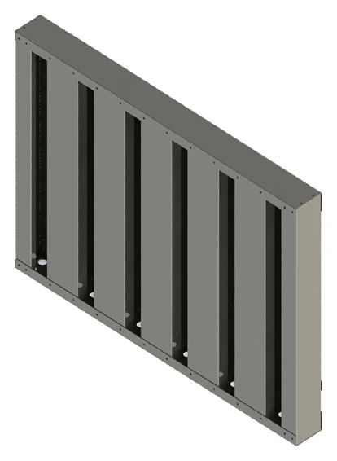
Menfezler ve Hava Dağıtımı
Dış hava girişinde kum ve toz için ön ayırma sağlayan şaşırtmalı kanatlı panjur.
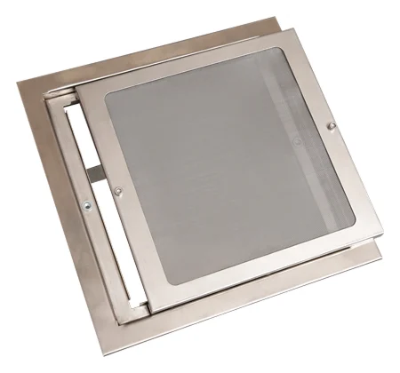
Menfezler ve Hava Dağıtımı
Emiş havasındaki lif ve parçacıkların kanal sistemine girmesini sınırlayan menfez.
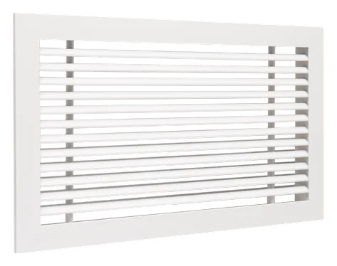
Menfezler ve Hava Dağıtımı
Üfleme ve emiş hatlarında kullanılan, sabit açılı kanatlara sahip lineer menfez.
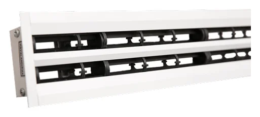
Menfezler ve Hava Dağıtımı
İnce çerçeveli, makaralı kanatlarla hava yönünün ayrı ayrı ayarlanabildiği slot difüzör.
Menfezler ve Hava Dağıtımı
Kanal basıncı değişirken hedef debiyi mekanik olarak korumaya yönelik damper.
Menfezler ve Hava Dağıtımı
Tavan boyunca çizgisel üfleme veya emiş sağlayan, modüler slot difüzör.
Menfezler ve Hava Dağıtımı
Sabit radyal kanatlarıyla yüksek hava debisini tavandan dağıtan swirl difüzör.
Menfezler ve Hava Dağıtımı
Hava yönünü elle ayarlamaya izin veren, hareketli kanatlı swirl difüzör.
Menfezler ve Hava Dağıtımı
Katlı yapılarda duman tahliye şaftının ilgili katla bağlantısını kontrol eden damper.
Menfezler ve Hava Dağıtımı
Özellikle emiş hatlarında kullanılan, tek sıra hareketli kanatlı alüminyum menfez.
Menfezler ve Hava Dağıtımı
Yüksek tavanlı mekânlarda havayı türbülans etkisiyle dağıtan difüzör.
Menfezler ve Hava Dağıtımı
Kanal üzerinden yangın yayılımını sınırlamaya yönelik, termik sigortalı damper ailesi.
Menfezler ve Hava Dağıtımı
Yangın ve duman bölmeleri arasında kanal geçişini kapatmak için tasarlanan prizmatik damper.
Menfezler ve Hava Dağıtımı
Yükseltilmiş döşemelerde düşük hızlı hava dağılımı için kullanılan yer difüzörü.
Menfezler ve Hava Dağıtımı
Yükseltilmiş döşemelerde hava transferi için darbelere dayanıklı lineer menfez.
Filtre Grubu
Duman veya tozu oluştuğu noktaya yakın mesafeden emmek için hareketli yakalama kolu.
Filtre Grubu
Farklı çalışma noktalarındaki kaynak dumanını emmek ve filtrelemek için taşınabilir ünite.
Filtre Grubu
Farklı çalışma noktalarındaki kaynak dumanını emmek ve filtrelemek için taşınabilir ünite.
Filtre Grubu
Farklı çalışma noktalarındaki kaynak dumanını emmek ve filtrelemek için taşınabilir ünite.
Filtre Grubu
Tozu torba yüzeyinde tutan ve basınçlı hava darbeleriyle temizlenen endüstriyel filtre sistemi.
Filtre Grubu
Toz toplama haznesindeki malzemeyi boşaltırken hava geçişini sınırlayan döner valf.
Filtre Grubu
Algılama ve söndürücü enjeksiyonu ile patlama alevinin tesisattaki ilerlemesini sınırlayan sistem.
Filtre Grubu
Toz toplama hatlarında patlama etkisinin bağlantılı bölümlere taşınmasını sınırlayan izolasyon elemanı.
Filtre Grubu
Toz toplama ekipmanında oluşabilecek patlama basıncını belirlenmiş bir alana tahliye eden eleman.
Filtre Grubu
Hava içindeki daha iri parçacıkları merkezkaç etkisiyle ayıran toz toplama ekipmanı.
Filtre Grubu
Gaz ve parçacıkların sıvıyla temas ettirilerek tutulduğu endüstriyel yıkama sistemi.
Filtre Grubu
CNC ve talaşlı imalat alanlarında oluşan yağ sisini toplamak için kullanılan filtreleme ekipmanı.
Farklı bir model adı deneyin veya filtreleri temizleyin.
DOĞRU ÜRÜNÜ BİRLİKTE SEÇELİM
Ürün kodunu, ihtiyacınızı veya uygulama alanınızı paylaşın.